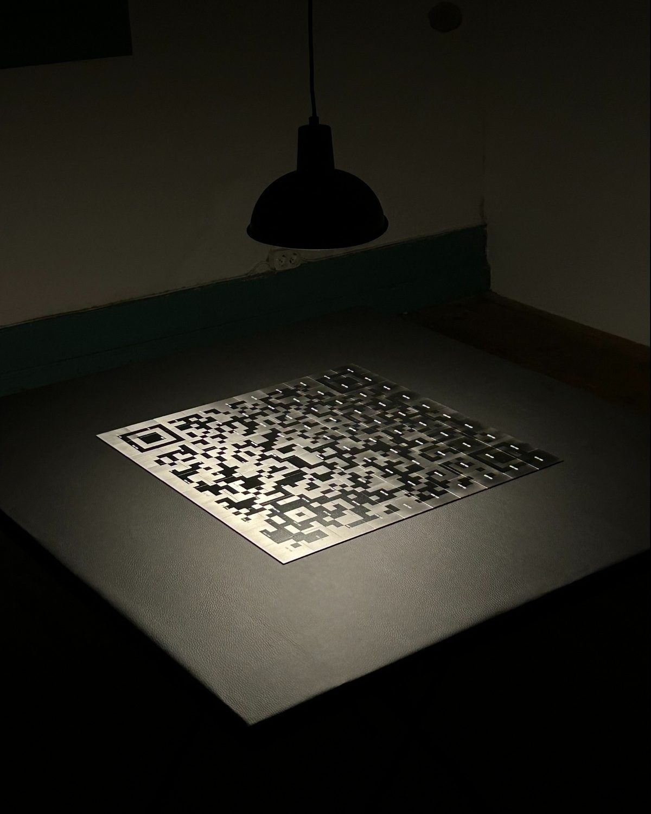
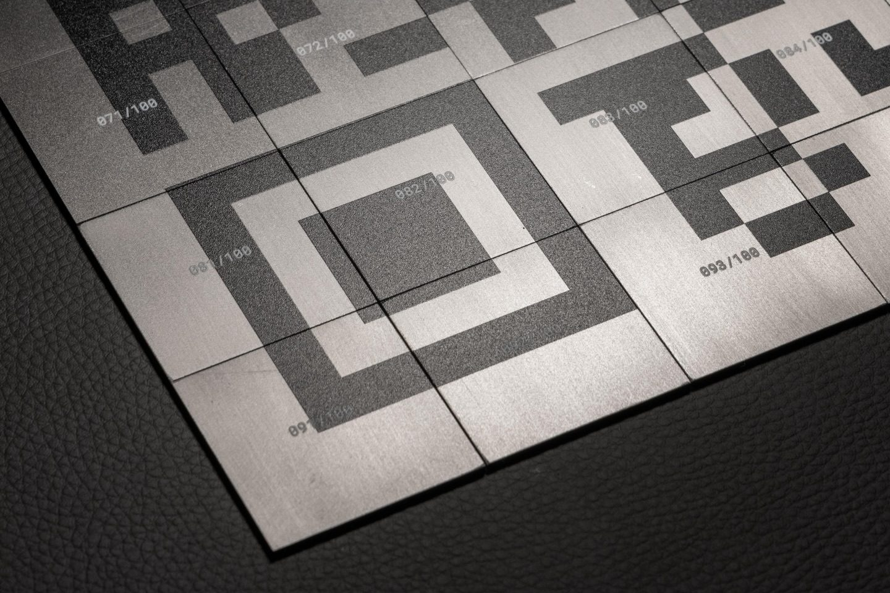
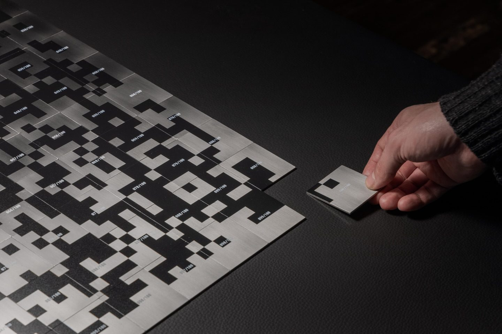

Campo Gravitacional
A palavra comunidade é muitas vezes usada para gerar comportamentos de consumo, amplificados por algoritmos e estratégias digitais, originando poucos vínculos reais e falsos sentimentos de pertença.
A instalação “Campo Gravitacional” reflete sobre as relações e a comunidade, a proximidade humana e os interesses comuns. Desenvolvida pela Asteróide Fértil, é construído um ambiente digital enigmático em torno de um puzzle composto por cem peças numeradas. É na sua dispersão que nasce a possibilidade de uma nova comunidade que permite um reencontro futuro entre quem escolhe participar.



